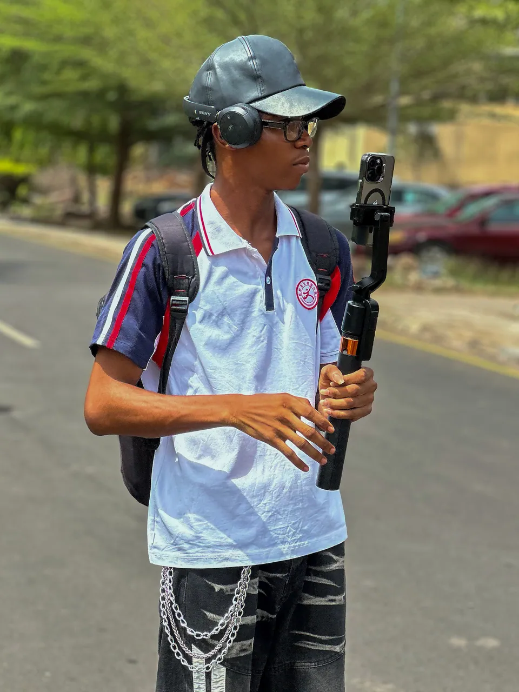
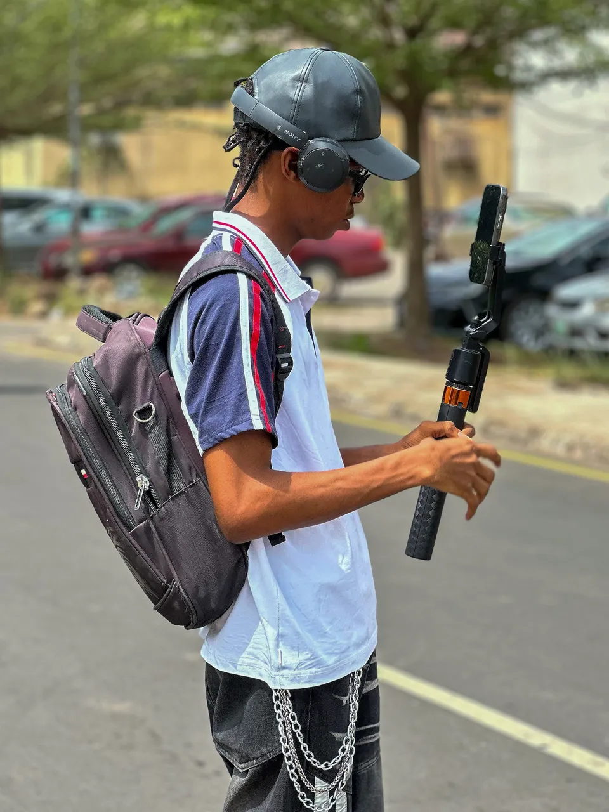
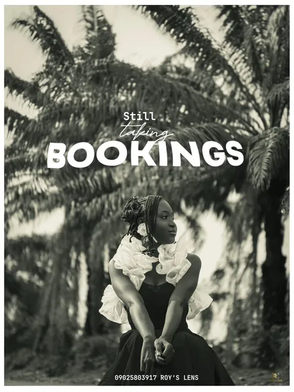
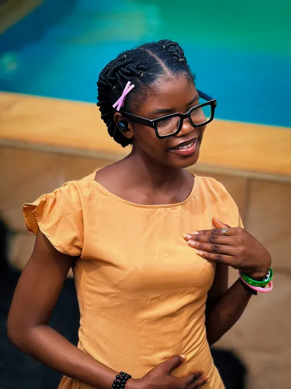
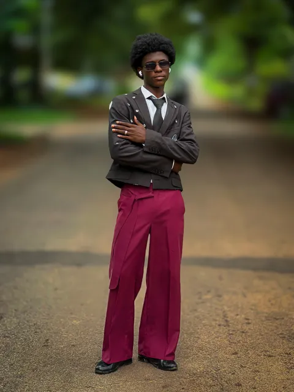
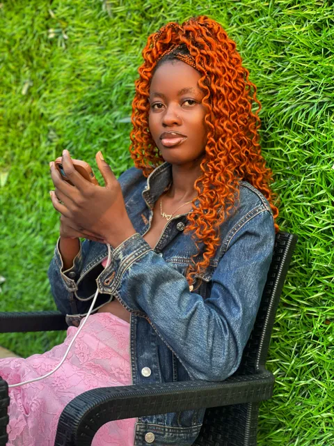
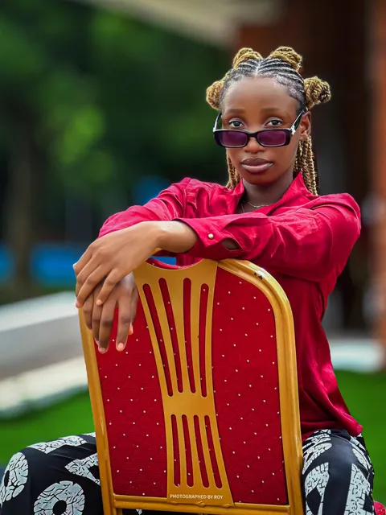

Portrait spotlight
In your own light.
Soft window light, an easy gesture, and the personality at the centre of the frame.
LAGOS & IBADAN, NIGERIA · PHOTOGRAPHY BY ROY
Expressive portraits. Unforgettable celebrations. Photographs that feel as real as the moment.
A CLOSER LOOK
What I Offer
Professional portrait sessions with premium editing
Complete wedding coverage with cinematic quality
Capture every moment of your special events
High-fashion photography & editorial work
CLIENT SPOTLIGHTS
Portrait spotlight
Soft window light, an easy gesture, and the personality at the centre of the frame.
Fashion spotlight
Clean lines and a bold hit of burgundy give this full-length portrait its character.
Portrait spotlight
A red dress and a bright outdoor setting turn a simple portrait into a vivid frame.
IN THEIR WORDS
"Roy made our wedding feel like a feature film. Every photo is a beautiful memory we can relive forever."
Wedding Photography
"The portrait session was effortless and the final gallery captured my personality perfectly."
Portrait Session
"From pre-shoot planning to delivery, the process was smooth and professional. I love every image."
Editorial Campaign
BEHIND THE LENS / ON SET
A camera, a gimbal, and a different way of seeing. A small look at Roy working on location, on the other side of the photograph.


The Roy Experience
This is more than shooting photos. It’s a creative collaboration built around how you want to look, feel, and be remembered.

We begin with a relaxed conversation so your vision, personality, and priorities come through clearly.

We make the session feel effortless by planning every detail with your story, style, and confidence in mind.

On shoot day, the focus is on comfort, movement and real moments so the images feel natural and cinematic.

I polish the full story with intentional edits, mood, and cinematic colour that suit your vision.

Your finished images are delivered beautifully, curated for the story and the way you want to share it.
Frequently Asked Questions
Answers to the most common questions about deposits, scheduling, editing, and delivery.
Booking clarity
Plan with confidence. Find clear details for deposits, schedules, editing timelines, and package inclusions.
Request a BookingYour requested date is held as an inquiry until Roy reviews your details. Confirmation is sent in writing after availability and terms are agreed.
The deposit depends on the package. A personalized quote is provided before payment, and no payment is requested until the booking is confirmed.
Delivery times vary by session type and package. Estimated timelines are shared during booking so you always know when to expect your final gallery.
Only services listed in the confirmed quote are included. Studio hire, makeup, travel, and extra hours can be added on request.
Final delivery focuses on edited images. RAW files are available by request and will be agreed on as part of your booking package.
Rescheduling and cancellation policies are included in the booking agreement. Requests should be made early to avoid extra fees.
Portfolio
A collection of my best work across different categories.
Services
Six ways to tell your story. Choose a starting point; final availability and your quote are agreed before booking.
SESSION PRICE₦50,000
SESSION PRICE₦150,000+
SESSION PRICE₦100,000
SESSION PRICE₦30,000
SESSION PRICE₦20,000
SESSION PRICE₦30,000
Editing Showcase
See the power of professional editing and retouching.
Drag across the portrait to compare the original treatment with the finished edit.
THE STORY EDIT
Portrait studies, city notes and the energy of live performance. Step inside the photographs.
A portrait study
Warm yellow. Cool blue. A smile that makes the frame its own.
A CLOSER LOOK
This portrait study follows the conversation between colour and expression. The wider frame gives the pose room to breathe; the closer portrait draws attention to a smile, a gesture, and the light on the face.
Notes from the street
A crossing, a passing car, a quiet pause. The everyday becomes the story.
A CLOSER LOOK
Road markings, passing traffic and everyday objects become part of the composition. These photographs move between a wider street scene and a more personal portrait, holding onto the character of the surroundings.
Live, in colour
Purple washes. Blue light. A saxophone held between the music and the moment.
A CLOSER LOOK
Live performance brings its own palette. Purple and blue stage light shape these frames, while the instruments, gestures and space around the performers tell the rest of the story.
Ready to Collaborate?
Choose a session, share four details, and let’s take it from there.
About Me
Oluwanifemi Roy — founder, creative director, and cinematic portrait photographer
Professional Photography with a Cinematic Edge
With over 3 years of experience in professional photography, I've developed a signature style that blends natural storytelling with polished composition. My work delivers images that feel personal, powerful, and timeless.
Whether it's a wedding, portrait session, fashion shoot, or corporate event, I bring creativity, technical expertise, and a passion for visual storytelling to every project.
My editing style is refined and modern, enhancing your natural beauty and the essence of each moment without overdoing it.
Client Testimonials
"Roy captured our wedding day beautifully. Every moment felt natural and authentic. We couldn't be happier with the photos!"
Wedding Photography
"Professional, creative, and so easy to work with. Roy made me feel comfortable during my fashion shoot and the results are stunning!"
Fashion Shoot
"The best decision for my graduation photos. Roy's editing style is signature and unique. Highly recommended!"
Graduation Session
Get In Touch
Reach out for inquiries, collaborations, or just to say hello!
Ready to bring your vision to life? Reach out through any of these channels:
I typically respond to inquiries within 24 hours.